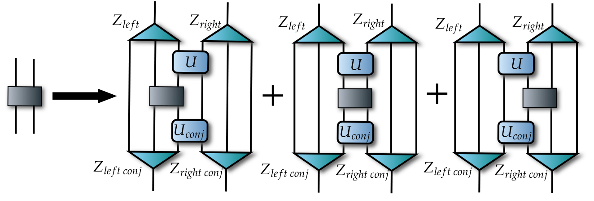
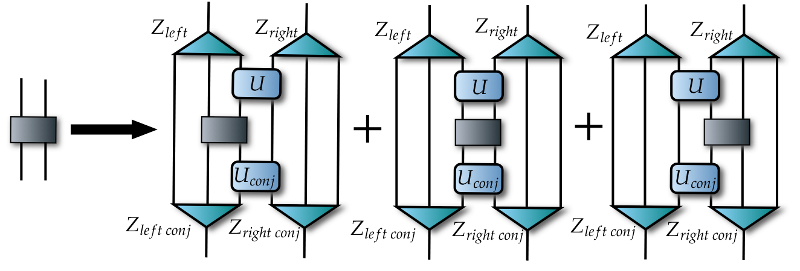

Entanglement renormalization¶
One can open it in Google Colab (is recommended)

In the given tutorial, we show how the Riemannian optimization on the complex Stiefel manifold can be used to perform entanglement renormalization and find the ground state of a many-body spin system in the point of phase transition. First of all, let us import some libraries.
[ ]:
import numpy as np
from scipy import integrate
import tensorflow as tf # tf 2.x
try:
import QGOpt as qgo
except ImportError:
!pip install git+https://github.com/LuchnikovI/QGOpt
import QGOpt as qgo
# TensorNetwork library
try:
import tensornetwork as tn
except ImportError:
!pip install tensornetwork
import tensornetwork as tn
import matplotlib.pyplot as plt
from tqdm import tqdm
tn.set_default_backend("tensorflow")
# Fix random seed to make results reproducable.
tf.random.set_seed(42)
Renormalization layer¶
Here we define a renormalization layer by using TensorNetwork library. The function mera_layer takes unitary and isometric blocks and perform renormalization as it shown on the tensor diagram below (if the diagram is not displayed here, please open the notebook in Google Colab  ).  For more information please see
).  For more information please see
Evenbly, G., & Vidal, G. (2009). Algorithms for entanglement renormalization. Physical Review B, 79(14), 144108.
Evenbly, G., & Vidal, G. (2014). Algorithms for entanglement renormalization: boundaries, impurities and interfaces. Journal of Statistical Physics, 157(4-5), 931-978.
[ ]:
@tf.function
def mera_layer(H,
U,
U_conj,
Z_left,
Z_right,
Z_left_conj,
Z_right_conj):
"""
Renormalizes local Hamiltonian.
Args:
H: complex valued tensor of shape (chi ** 2, chi ** 2),
input two-side Hamiltonian.
U: complex valued tensor of shape (chi ** 2, chi ** 2), disentangler
U_conj: complex valued tensor of shape (chi ** 2, chi ** 2),
conjugated disentangler.
Z_left: complex valued tf tensor of shape (chi ** 3, new_chi),
left isometry.
Z_right: complex valued tf tensor of shape (chi ** 3, new_chi),
right isometry.
Z_left_conj: complex valued tf tensor of shape (chi ** 3, new_chi),
left conjugated isometry.
Z_right_conj: complex valued tf tensor of shape (chi ** 3, new_chi),
right conjugated isometry.
Returns:
complex valued tensor of shape (new_chi ** 2, new_chi ** 2),
renormalized two side hamiltonian.
"""
# index dim. before renormalization
chi = tf.cast(tf.math.sqrt(tf.cast(U.shape[0], dtype=tf.float64)),
dtype=tf.int32)
# index dim. after renormalization
chi_new = Z_left.shape[-1]
# tn nodes
# Hamiltonian
h = tn.Node(tf.reshape(H, (chi, chi, chi, chi)))
# disentangler
u = tn.Node(tf.reshape(U, (chi, chi, chi, chi)))
# conj. disentangler
u_conj = tn.Node(tf.reshape(U_conj, (chi, chi, chi, chi)))
# left isometry
z_left = tn.Node(tf.reshape(Z_left, (chi, chi, chi, chi_new)))
# right isometry
z_right = tn.Node(tf.reshape(Z_right, (chi, chi, chi, chi_new)))
# conj. left isometry
z_left_conj = tn.Node(tf.reshape(Z_left_conj, (chi, chi, chi, chi_new)))
# conj. right isometry
z_right_conj = tn.Node(tf.reshape(Z_right_conj, (chi, chi, chi, chi_new)))
# standard for all three diagrams environment
z_left[0]^z_left_conj[0]
z_right[2]^z_right_conj[2]
u[2]^z_left[2]
u[3]^z_right[0]
u_conj[2]^z_left_conj[2]
u_conj[3]^z_right_conj[0]
# first diagram
z_left[1]^h[2]
z_left_conj[1]^h[0]
u[0]^h[3]
u_conj[0]^h[1]
u[1]^u_conj[1]
z_right[1]^z_right_conj[1]
nodes = tn.reachable(h)
renorm_first = tn.contractors.optimal(nodes, [z_left_conj[3],
z_right_conj[3],
z_left[3],
z_right[3]])
# standard for all three diagrams environment
z_left[0]^z_left_conj[0]
z_right[2]^z_right_conj[2]
u[2]^z_left[2]
u[3]^z_right[0]
u_conj[2]^z_left_conj[2]
u_conj[3]^z_right_conj[0]
# second diagram
z_left[1]^z_left_conj[1]
z_right[1]^z_right_conj[1]
u[0]^h[2]
u[1]^h[3]
u_conj[0]^h[0]
u_conj[1]^h[1]
nodes = tn.reachable(h)
renorm_second = tn.contractors.optimal(nodes, [z_left_conj[3],
z_right_conj[3],
z_left[3],
z_right[3]])
# standard for all three diagrams environment
z_left[0]^z_left_conj[0]
z_right[2]^z_right_conj[2]
u[2]^z_left[2]
u[3]^z_right[0]
u_conj[2]^z_left_conj[2]
u_conj[3]^z_right_conj[0]
# third diagram
z_left[1]^z_left_conj[1]
u[0]^u_conj[0]
u[1]^h[2]
u_conj[1]^h[0]
z_right[1]^h[3]
z_right_conj[1]^h[1]
nodes = tn.reachable(h)
renorm_third = tn.contractors.optimal(nodes, [z_left_conj[3],
z_right_conj[3],
z_left[3],
z_right[3]])
# sum of all three diagrams
h_renorm = (renorm_first.tensor +\
renorm_second.tensor +\
renorm_third.tensor) / 3
return h_renorm
@tf.function
def z_gen(chi, new_chi):
"""Returns random isometry.
Args:
chi: int number, input chi.
new_chi: int number, output chi.
Returns:
complex valued tensor of shape (chi ** 3, new_chi)."""
# one can use the complex Stiefel manfiold to generate a random isometry
m = qgo.manifolds.StiefelManifold()
Z = m.random((chi ** 3, new_chi), dtype=tf.complex128)
return Z
@tf.function
def u_gen(chi):
"""Returns identical matrix (initial disentangler).
Args:
chi: int number, chi.
Returns:
complex valued tensor of shape (chi ** 2, chi ** 2)."""
U = tf.eye(chi ** 2, dtype=tf.complex128)
return U
TFI hamiltonian and MERA building blocks¶
Here we define the Transverse-field Ising model Hamiltonian and building blocks (disentanglers and isometries) of MERA that are being optimized during the optimization process.
[ ]:
#===========================================================================#
max_chi = 4 # max bond dim
num_of_layers = 5 # number of MERA layers (corresponds to 2*3^5 = 486 spins)
h_x = 1. # transvers field (h_x=1 -- critical field)
#===========================================================================#
# Pauli matrices
sigma = tf.constant([[[1j*0, 1 + 1j*0], [1 + 1j*0, 0*1j]],
[[0*1j, -1j], [1j, 0*1j]],
[[1 + 0*1j, 0*1j], [0*1j, -1 + 0*1j]]], dtype=tf.complex128)
# Hamiltonian (Transverse-field Ising model, local term)
h = -tf.einsum('ij,kl->ikjl', sigma[0], sigma[0]) +\
tf.einsum('ij,kl->ikjl', -h_x * sigma[2], tf.eye(2, dtype=tf.complex128))
# initial building blocks (disentanglers and isometries)
U = u_gen(2)
Z = z_gen(2, max_chi)
U_list = [u_gen(max_chi) for _ in range(num_of_layers - 1)]
Z_list = [z_gen(max_chi, max_chi) for _ in range(num_of_layers - 1)]
U_list = [U] + U_list
Z_list = [Z] + Z_list
# state in the renormalie space
psi = qgo.manifolds.real_to_complex(tf.random.normal((max_chi ** 2, 1, 2),
dtype=tf.float64))
psi, _ = tf.linalg.qr(psi)
# converting U, Z, psi to float64 (necessary for optimizer)
U_list = [qgo.manifolds.complex_to_real(U_list[i]) for i in range(len(U_list))]
Z_list = [qgo.manifolds.complex_to_real(Z_list[i]) for i in range(len(Z_list))]
psi = qgo.manifolds.complex_to_real(psi)
Optimization loop¶
In order to find the ground state and its energy, we perform optimization of variational energy
[ ]:
#==================================#
iters = 3000 # number of iterations
lr_i = 0.6 # initial learning rate
lr_f = 0.1 # final learning rate
#==================================#
# learning rate decay coefficient
decay = (lr_f / lr_i) ** (1 / iters)
# optimizer
m = qgo.manifolds.StiefelManifold() # Stiefel manifold
opt = qgo.optimizers.RAdam(m, lr_i) # Riemannian Adam
E_list = [] # will be filled by energy per iteration
# Variables to be optimized
varU = [tf.Variable(U_re) for U_re in U_list] # disentanglers vars
varZ = [tf.Variable(Z_re) for Z_re in Z_list] # isometries vars
varpsi = tf.Variable(psi) # psi var
all_vars = varU + varZ + [varpsi] # all variables in one list
# optimization loop
for j in tqdm(range(iters)):
# gradient calculation
with tf.GradientTape() as tape:
# convert real variables to complex representation
varU_c = [qgo.manifolds.real_to_complex(varU[i]) for i in range(len(varU))]
varZ_c = [qgo.manifolds.real_to_complex(varZ[i]) for i in range(len(varZ))]
varpsi_c = qgo.manifolds.real_to_complex(varpsi)
# initial Hamiltonian
h_renorm = h
# renormalization
for i in range(len(varU)):
h_renorm = mera_layer(h_renorm,
varU_c[i],
tf.math.conj(varU_c[i]),
varZ_c[i],
varZ_c[i],
tf.math.conj(varZ_c[i]),
tf.math.conj(varZ_c[i]))
# renormalizad hamiltonian (low dimensional)
h_renorm = (h_renorm + tf.transpose(h_renorm, (1, 0, 3, 2))) / 2
h_renorm = tf.reshape(h_renorm, (max_chi * max_chi, max_chi * max_chi))
# energy
E = tf.cast((tf.transpose(tf.math.conj(varpsi_c)) @ h_renorm @ varpsi_c),
dtype=tf.float64)[0, 0]
# filling E_list
E_list.append(E)
# gradients
grad = tape.gradient(E, all_vars)
# optimization step
opt.apply_gradients(zip(grad, all_vars))
# learning rate update
opt._set_hyper("learning_rate", opt._get_hyper("learning_rate") * decay)
Plotting difference between the exact value of energy and value found by entanglement renormalization.
[ ]:
# exact value of energy in the critical point
N = 2 * (3 ** num_of_layers) # number of spins (for 5 layers one has 486 spins)
E0_exact_fin = -2 * (1 / np.sin(np.pi / (2 * N))) / N # exact energy
plt.yscale('log')
plt.xlabel('iter')
plt.ylabel('err')
plt.plot(E_list - tf.convert_to_tensor(([E0_exact_fin] * len(E_list))), 'b')
print("MERA energy:", E_list[-1].numpy())
print("Exact energy:", E0_exact_fin)
MERA energy: -1.2731158867108772
Exact energy: -1.2732417615356748